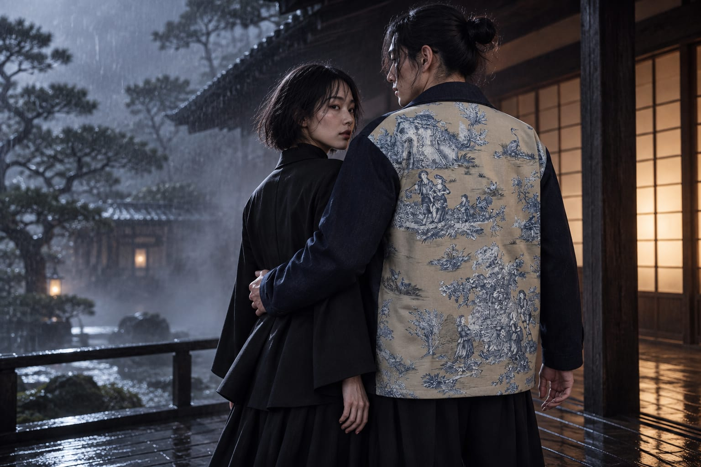

03 · Pièce unique
Veste indigo
Une veste longue et droite en denim indigo, fermée par un zip métal. Les deux poches sont bordées de toile de Jouy ; le dos est un panneau entier de toile beige et bleu.

Col pointu rabattu, épaules tombantes, manches droites, ourlet simple. Deux poches basses, légèrement inclinées, bordées de toile de Jouy crème et bleu.
Au dos : une chaumière en haut à gauche, un héron en haut à droite, une famille au milieu, à gauche, des bâtiments et des feuillages plus bas.
- Coupe
- Longue et droite, épaules tombantes, manches droites
- Fermeture
- Zip métal
- Poches
- Deux poches basses bordées de toile de Jouy
- Dos
- Toile de Jouy beige et bleu


Rendus de campagne générés par IA à partir de la pièce réelle, mannequin fictif. Les couleurs, motifs et coutures peuvent différer de la pièce. Le stylisme noir (masque, sous-pull, pantalon) est généré, ce n’est pas une pièce AJ. À propos des visuels.
Cette pièce vous intéresse ?
Nous écrire